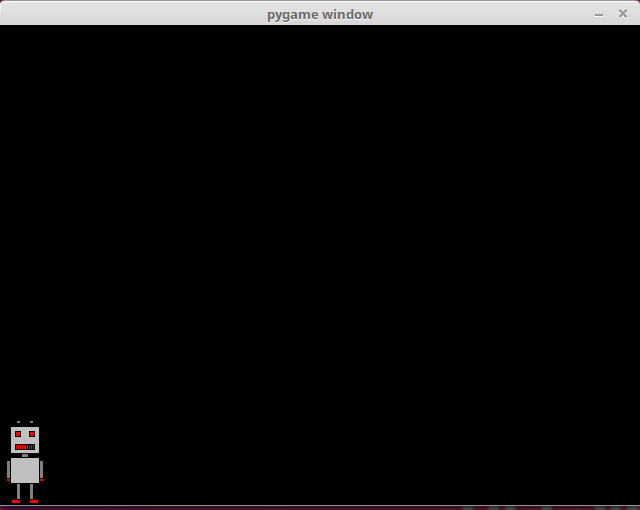
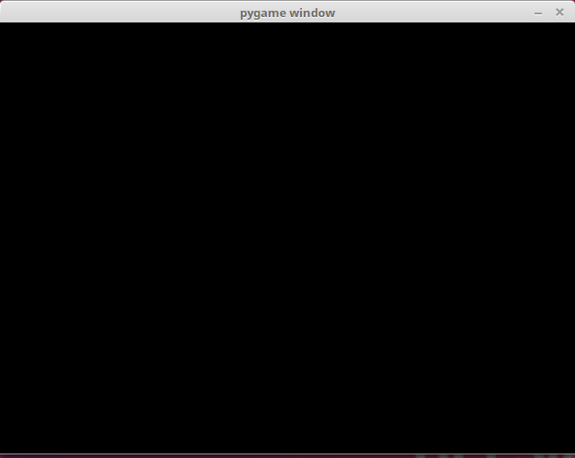
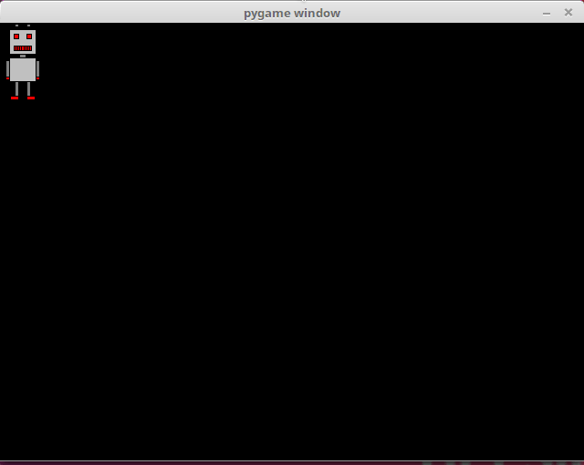

Thus far our main loops have only executed predetermined animations and reacted to only pygame.QUIT type events, even though the loop gets a list of all events from the operating system. Let’s get to grips with some other types of events, then.
This program prints out information about all the events passed by the operating system to the pygame program, while it is running:
import pygame
pygame.init()
window = pygame.display.set_mode((640, 480))
while True:
for event in pygame.event.get():
print(event)
if event.type == pygame.QUIT:
exit()
Let’s assume the program was left running for a while, and then the exit button was clicked. The program prints out the following info:
<Event(4-MouseMotion {'pos': (495, 274), 'rel': (495, 274), 'buttons': (0, 0, 0), 'window': None})>
<Event(4-MouseMotion {'pos': (494, 274), 'rel': (-1, 0), 'buttons': (0, 0, 0), 'window': None})>
<Event(4-MouseMotion {'pos': (492, 274), 'rel': (-2, 0), 'buttons': (0, 0, 0), 'window': None})>
<Event(4-MouseMotion {'pos': (491, 274), 'rel': (-1, 0), 'buttons': (0, 0, 0), 'window': None})>
<Event(5-MouseButtonDown {'pos': (491, 274), 'button': 1, 'window': None})>
<Event(6-MouseButtonUp {'pos': (491, 274), 'button': 1, 'window': None})>
<Event(2-KeyDown {'unicode': 'a', 'key': 97, 'mod': 0, 'scancode': 38, 'window': None})>
<Event(3-KeyUp {'key': 97, 'mod': 0, 'scancode': 38, 'window': None})>
<Event(2-KeyDown {'unicode': 'b', 'key': 98, 'mod': 0, 'scancode': 56, 'window': None})>
<Event(3-KeyUp {'key': 98, 'mod': 0, 'scancode': 56, 'window': None})>
<Event(2-KeyDown {'unicode': 'c', 'key': 99, 'mod': 0, 'scancode': 54, 'window': None})>
<Event(3-KeyUp {'key': 99, 'mod': 0, 'scancode': 54, 'window': None})>
<Event(12-Quit {})>
The first few events concern mouse usage, ten there are some events from the keyboard, and finally the last event closes the program. Each event has at least a type, but they may also offer some other identifying info, such as the location of the mouse cursor or the key that was pressed.
You can look for event descriptions in the pygame documentation, but it can sometimes be easier to print out events with the code above, and look for the event that occurs when something you want to react to happens.
This program can process events where the user presses the arrow key either to the right or to the left on their keyboard. The program prints out which key was pressed.
import pygame
pygame.init()
window = pygame.display.set_mode((640, 480))
while True:
for event in pygame.event.get():
if event.type == pygame.KEYDOWN:
if event.key == pygame.K_LEFT:
print("left")
if event.key == pygame.K_RIGHT:
print("right")
if event.type == pygame.QUIT:
exit()
The constants pygame.K_LEFT and pygame.K_RIGHT refer to the arrow keys to the left and right. The pgyame key constants for the different keys on a keyboard are listed in the pygame documentation.
For example, if the user presses the arrow key to the right twice, then the left one once, and then the right one once more, the program prints out
right
right
left
right
We now have all the tools needed to move a character, or sprite, on the screen to the right and left with the arrow keys. The following code will achieve this:
import pygame
pygame.init()
window = pygame.display.set_mode((640, 480))
robot = pygame.image.load("robot.png")
x = 0
y = 480-robot.get_height()
while True:
for event in pygame.event.get():
if event.type == pygame.KEYDOWN:
if event.key == pygame.K_LEFT:
x -= 10
if event.key == pygame.K_RIGHT:
x += 10
if event.type == pygame.QUIT:
exit()
window.fill((0, 0, 0))
window.blit(robot, (x, y))
pygame.display.flip()
Depending on how you use your arrow keys, running the program could look like this:

In the code above we have the variables x and y which contain the coordinate location for the sprite. The variable y is set so that the sprite appears at the bottom of the window. The y value does not change throughout the execution of the program. The x value, however, increases by 10 whenever the user presses the arrow key to the right, and decreases by 10 whenever the left arrow key is pressed.
The program works otherwise quite well, but the key needs to be pressed again each time we want to move again. It would be better if the movement was continuous as the key was held down. The following program offfers this functionality:
import pygame
pygame.init()
window = pygame.display.set_mode((640, 480))
robot = pygame.image.load("robot.png")
x = 0
y = 480-robot.get_height()
to_right = False
to_left = False
clock = pygame.time.Clock()
while True:
for event in pygame.event.get():
if event.type == pygame.KEYDOWN:
if event.key == pygame.K_LEFT:
to_left = True
if event.key == pygame.K_RIGHT:
to_right = True
if event.type == pygame.KEYUP:
if event.key == pygame.K_LEFT:
to_left = False
if event.key == pygame.K_RIGHT:
to_right = False
if event.type == pygame.QUIT:
exit()
if to_right:
x += 2
if to_left:
x -= 2
window.fill((0, 0, 0))
window.blit(robot, (x, y))
pygame.display.flip()
clock.tick(60)
The code now contains the variables to_right and to_left. These contain knowledge of whether the sprite should be moving to the right or to the left at any given moment. When the user presses down an arrow key, the value stored in the relevant variable become True. When the key is released, the value changes to False.
The clock is used to time the movements of the sprite, so that they potentially happen 60 times each second. If an arrow key is pressed, the sprite moves two pixels to the right or to the left. This means the sprite moves 120 pixels per second if the key is kept pressed down.
The following code reacts to events where a mouse button is pressed down while the cursor is within the window area:
import pygame
pygame.init()
window = pygame.display.set_mode((640, 480))
while True:
for event in pygame.event.get():
if event.type == pygame.MOUSEBUTTONDOWN:
print("you pressed the button number", event.button, "at location", event.pos)
if event.type == pygame.QUIT:
exit()
The execution of this program should look more or less like this:
you pressed the button number 1 at location (82, 135)
you pressed the button number 1 at location (369, 135)
you pressed the button number 1 at location (269, 297)
you pressed the button number 3 at location (515, 324)
Button number 1 refers to the left mouse button and button number 3 refers to the right mouse button.
This next program combines mouse event handling and drawing an image on the screen. When the user presses a mouse button while the mouse cursor is within the bounds of the window, an image of a robot is drawn at that location.
import pygame
pygame.init()
window = pygame.display.set_mode((640, 480))
robot = pygame.image.load("robot.png")
while True:
for event in pygame.event.get():
if event.type == pygame.MOUSEBUTTONDOWN:
x = event.pos[0]-robot.get_width()/2
y = event.pos[1]-robot.get_height()/2
window.fill((0, 0, 0))
window.blit(robot, (x, y))
pygame.display.flip()
if event.type == pygame.QUIT:
exit()
The execution of the program could look like this:

The following program contains an animation where the robot sprite follows the mouse cursor.The location of the sprite is stored in the variables robot_x and robot_y. When the mouse moves, its location is stored in the variables target_x ja target_y. If the robot is not at this location, it moves to the approproate direction.
import pygame
pygame.init()
window = pygame.display.set_mode((640, 480))
robot = pygame.image.load("robot.png")
robot_x = 0
robot_y = 0
target_x = 0
target_y = 0
clock = pygame.time.Clock()
while True:
for event in pygame.event.get():
if event.type == pygame.MOUSEMOTION:
target_x = event.pos[0]-robot.get_width()/2
target_y = event.pos[1]-robot.get_height()/2
if event.type == pygame.QUIT:
exit(0)
if robot_x > target_x:
robot_x -= 1
if robot_x < target_x:
robot_x += 1
if robot_y > target_y:
robot_y -= 1
if robot_y < target_y:
robot_y += 1
window.fill((0, 0, 0))
window.blit(robot, (robot_x, robot_y))
pygame.display.flip()
clock.tick(60)
The program’s execution should look more or less like this:
